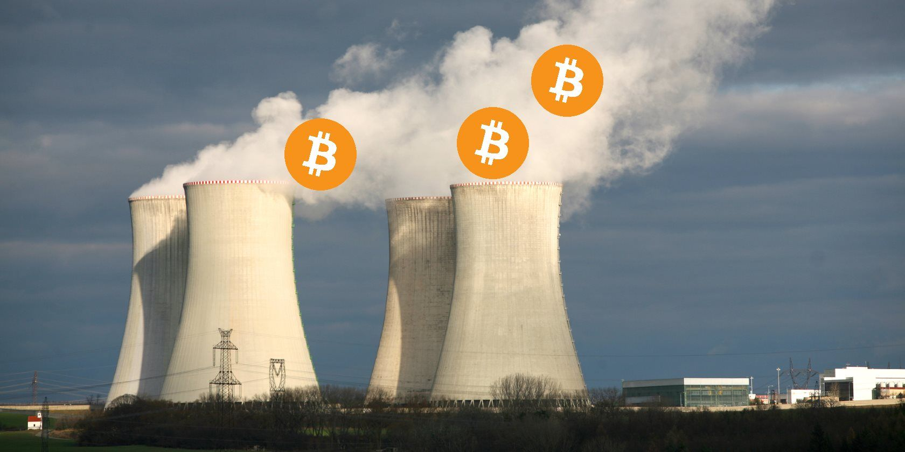

Prečo meriať spotrebu elektrickej energie Bitcoinových transakcií je non-sense
9-Máj-2022
Ako ste si už určite všimli, v poslednej dobe sa vyrojilo nespočet článkov a príspevkov na rozličných fórach, ktoré dokumentovali enormnú spotrebu energie Bitcoin-ovej siete - transakcií.
V tých spomínaných článkoch sa autori snažia porovnávať Bitcoin-ovú sieť s ostatnými tradičnými spracovateľmi platieb, ako je napr. VISA. V tomto blogu sa pokúsim demonštrovať, prečo si myslím, že je nezmyselné porovnávať tieto dve entity vzájomne.

1. VISA != Bitcoin
Bitcoin je trezor, minca, bankovka, banka, osobný bankér, riaditeľ banky, centrálna banka, banková tlačiareň,
účetná kniha transakcií, platobný sprostredkovateľ. VISA na druhej strane je len platobný procesor.
Z toho čo som zatiaľ stihol spomenúť, chytrý individuál si uvedomí, že Bitcoin je kompletný finančný systém,
zatiaľčo VISA je len jedna, možno minoritná, časť FIAT-ového finančného systému, ktorý štát ovláda.
Porovnávať Bitcoin s VISA-ou by bolo ako porovnávať CPU (procesor) s celým smartphone-om.
2. Viac transakcií nie-inherentne zvyšuje hashrate
Pre ukážku si zoberme taký obchod s potravinami. Čím viac máte zákazníkov, ktorí si kupujú potraviny, tým viac
predavačiek je potrebných na ich obslúženie.
VISA, keďže sú autoritou pre spracovanie a overenie transakcií, čím viac transakcií je potrebné overiť, tým viac
počítačov do datacentier potrebujú nakúpiť.
Takže tam je (skoro) priamy vzťah medzi počtom transakcií a spotreby elektrickej energie, ktorú treba "spáliť".
Toto však nie je prípad Bitcoin-u. Ako predpokladám asi už viete, Bitcoin-ový kód je naprogramovaný takým spôsobom, že
nové bloky transakcií sú vyťažené
v priemere každých 10 minút. Čo toto sposôbuje je to, že aj v prípade väčšieho hashrate (výpočetného výkonu siete),
náročnosť ťažby sa zvýši proporcionálne (toto
sa vypočítava každých 2016 blockov), čo zapríčini náročnosť ťaženia stúpať. Na druhej strane, ak sa hashrate zníži,
zníži sa aj náročnosť ťažby.
Toto sa deje preto, aby sa rýchlosť nových blockov nemohla zrýchliť ani spomaliť v závislosti od výkonu siete.
Znamená to však, že neexistuje priamy vzťah medzi množstvom transakcií a spotrebovanej elektriny ťažbou.
Hashrate tu funguje ako "firewall", či "ochrana" pred potenciálnym útočníkom, ktorý by chcel zneužiť sieť, zhromáždiť
väčšinu výpočetného výkonu,
aby mohol zmanipulovať uznávanú pravdu - transakčnú históriu. Vyšší hashrate predstavuje vyššiu bariéru pre hociakého
útočníka zhromáždiť aspoň
51% výkonu. Dnes je to skoro nemožné. Jeden by si ale mohol povedať, že všetok nadbytok nad "nevyhnutným" hashrate je
"vyhodený z okna", pretože vďaka
tomu sa nám nepodarí potvrdiť viacej transakcií. On, kto by si toto myslel, by sa obrovským spôsobom mýlil. Pretože
takisto ako neexistuje nič ako "správna cena",
či správne množstvo áut Lamborgini, ktoré by sa mali vyprodukovať za daný rok, tak neexistuje ani správny hashrate.
Samozrejme, nebolo by dobré mať hashrate tak malý, aby sa hocikomu podarilo nadobudnúť väčšinu, avšak hashrate je
dynamicky prispôsobovaný
závisle na trhových silách implementovaných v Bitcoin-ovom kóde.
V dnešnej dobe si ľudia môžu posielať aj malé zlomky bitcoin-u na blockchaine, čo by z nich robilo ohromne drahé vo
výpočetnom výkone,
avšak to nebude pravdepodobne takto aj v budúcnosti. Poslať platbu za kávu on-chain (skrz blockchain) by bolo ako
zostreliť holuba protitankovou strelou.
Bitcoin je myšlienka, o ktorej sa premýšľalo už dlhú dobu, "energy-money" (energetické peniaze). Ktoré nemožno vytvoriť
"zo vzduchu", ale pre získanie
odmeny za pridanie nového bloku a transakčných poplatkov, jeden (skôr mining-pool) potrebuje vynaložiť a "spáliť"
obrovské množstvo elektriny, aby
mohol vypracovať "proof-of-work" (dôkaz o vykonanej práci). On nemôže podvádzať, nemôže prezentovať dôkaz o vykonanej
práci bez toho, aby tú prácu vykonal.
V budúcnosti sa dá predpokladať, že Bitcoin-ový blockchain bude "vyrovnávacia sa vrstva", kde v jednej transakcii sa
vysporiadajú desiatky či stovky
lightningových kanálov alebo sidechain výsledkov.
Bitcoin-ový blockchain je veľmi nákladný spôsob ako ukladať dáta, kedže je distribuovaný po celej zemeguli. Avšak to nie
je pre kupovanie kávy.
Skúste o tom premýšľať ako pri bankách. Ľudia používajú bankové účty u komerčných bánk a komerčné banky potom sa
vysporiadávajú u centrálnej banky.
Centrálna banka neoveruje platby každého občana za kávu, či nákup z e-shopu. Ako množstvo chýtrych ľudí predpokladá,
vrátane mňa, na každodenné
platby sa bude používať "lightning network" alebo nejaké iné offchain riešenia a on-chain transakcie budú pre obrovské
prevody medzi inštitúciami,
možno nákupy domov, medzi štátmi, firmami a nie 1:1 transakcie. Radšej akýsi coinjoin, kde sa stretne spolu 100 ľudí vo
vstupoch a 200 výstupov (platba + výdavok).